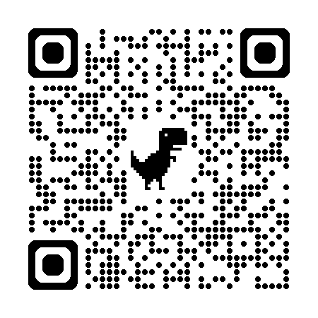

来搭把手
参与清洁、看门、活动支持和日常运营。
让空间继续被大家使用
有空客厅是非盈利项目。捐赠不是购买服务，而是支持一个可以被共同使用、共同维护、共同想象的公共空间。
支持方式
捐赠将用于房租、装修、公共支出和空间存续。所有支出会定期公示，也欢迎你来客厅看看这些钱最后变成了什么。
二维码
正式上线时请替换为最新微信、支付宝收款二维码。当前页面保留清晰位置，避免把社群码误当成收款码。
备注：昵称 + 微信号
300 元以上可备注“名誉发起人”。

二维码可能会过期，也可添加 ykkt2024。
财务透明
客厅的公共支出、收入和捐赠会记录在 Notion，并定期公示。曾经装修和房租带来负债，也靠伙伴的捐赠、活动收入和持续记账一点点对齐。
这不是为了把社区变成公司，而是为了让信任不只停留在“相信大家都很好”。
除了钱
如果你暂时不方便捐赠，也可以来帮忙看门、做饭、修东西、设计海报、拍照、写记录、整理账目、发活动接龙。
参与清洁、看门、活动支持和日常运营。
先沟通空间是否需要，避免好意变成堆积。
把适合这里的人、议题、活动或青年空间介绍过来。